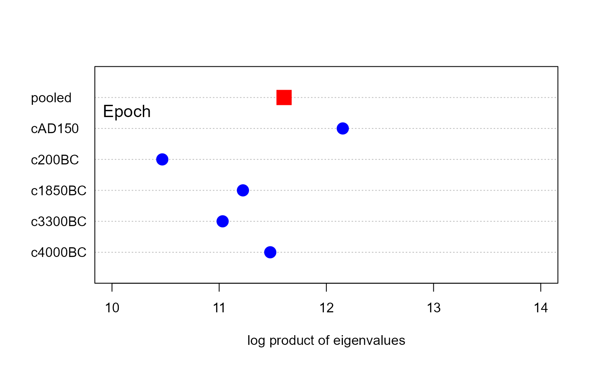
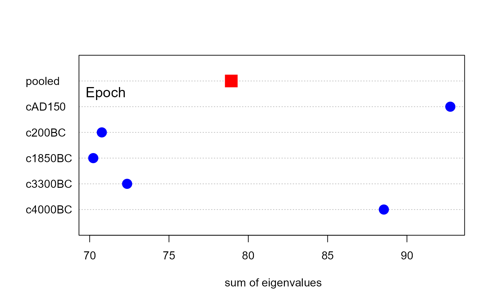
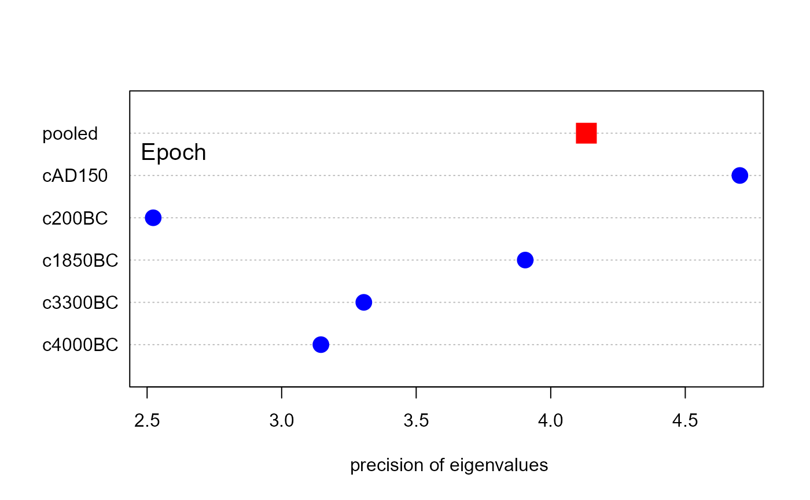
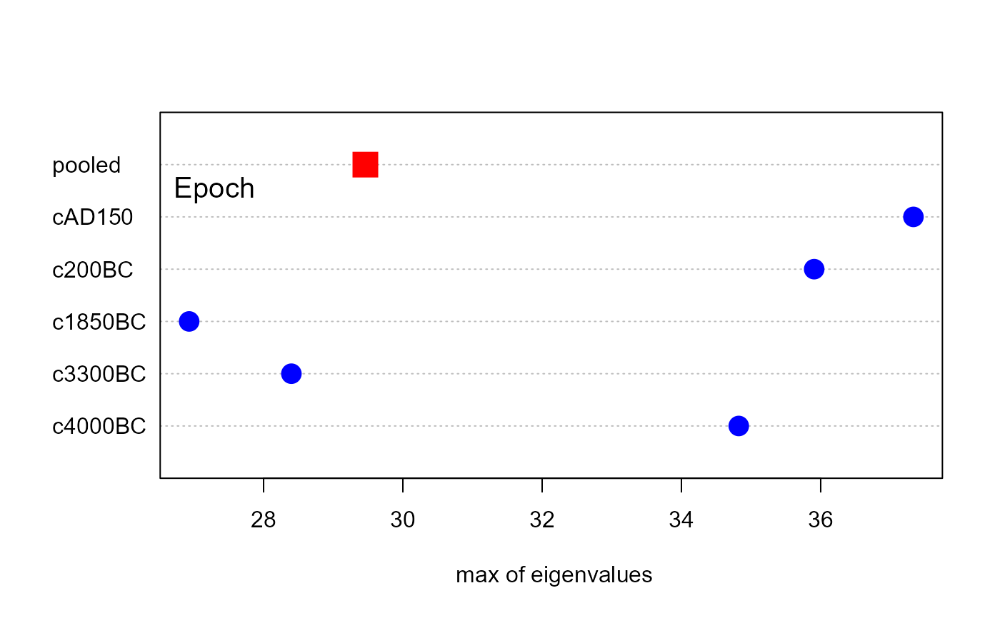
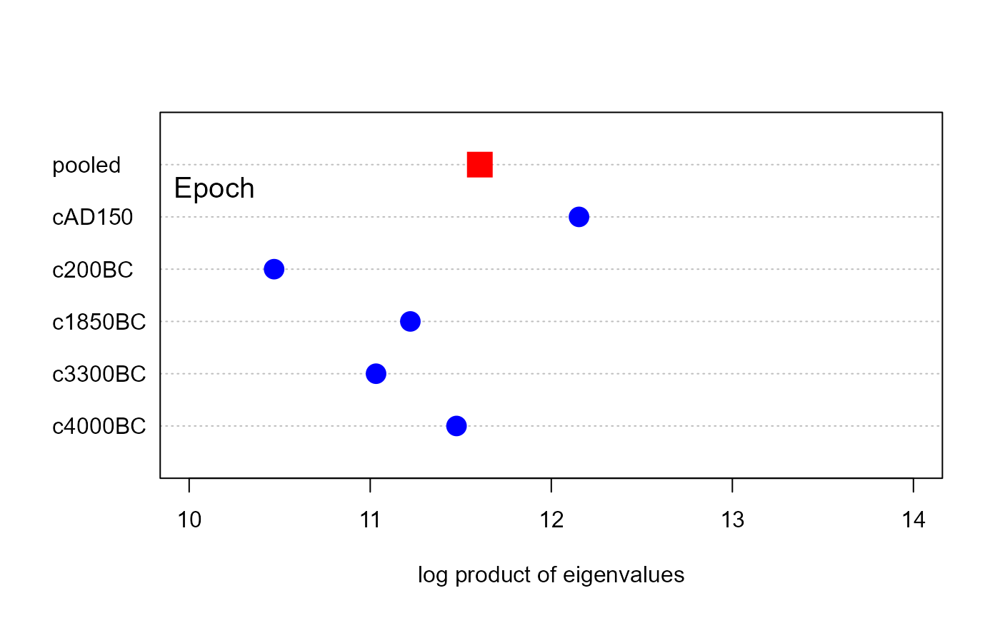
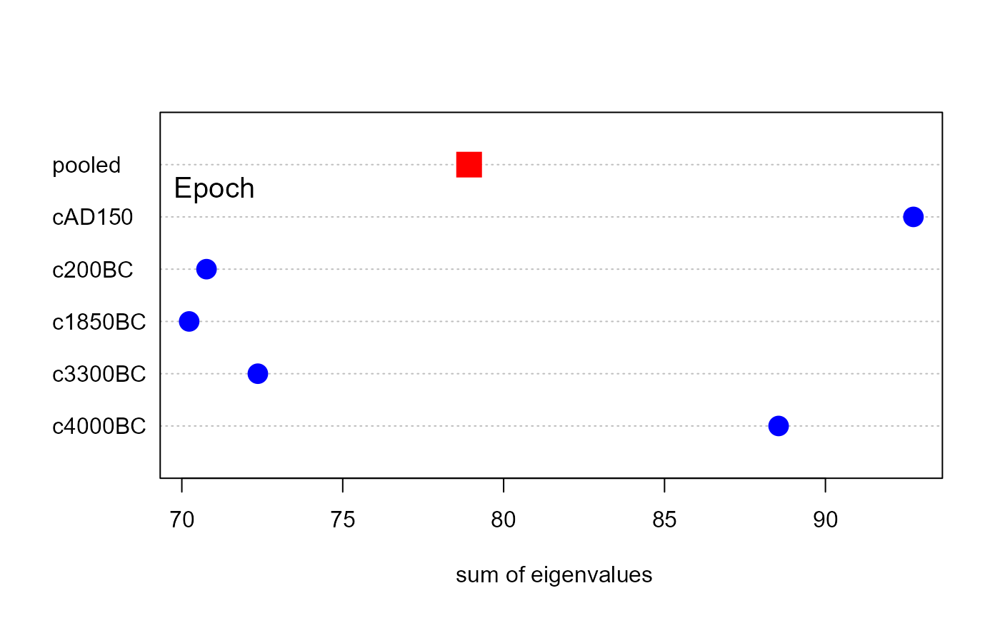
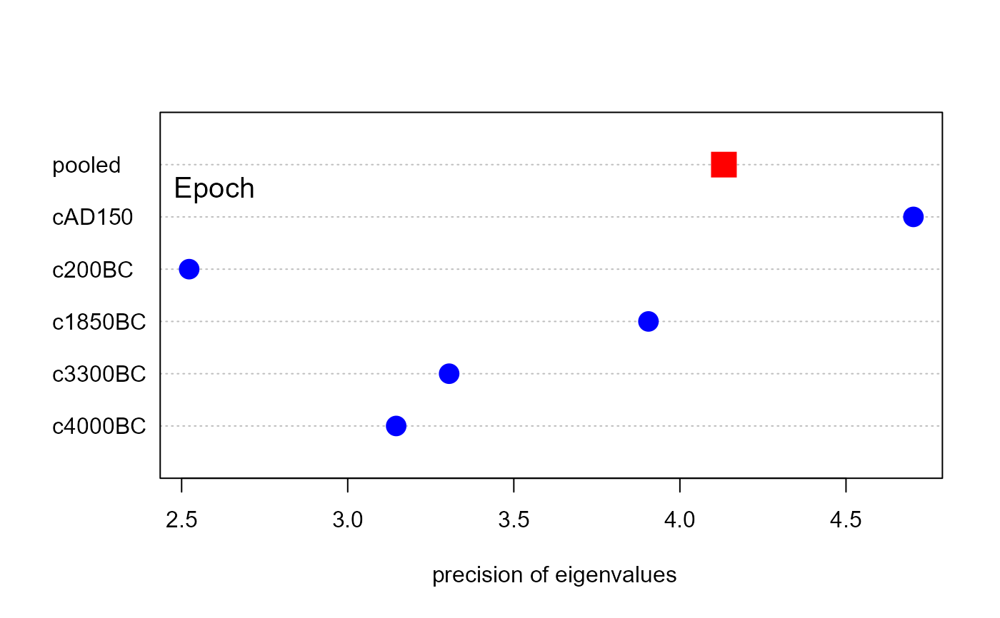
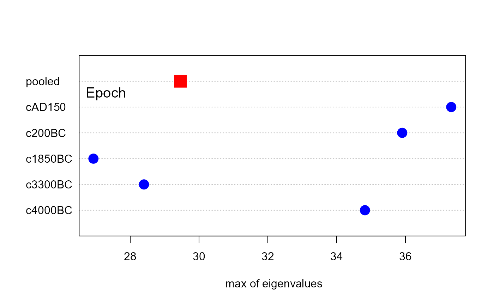

This function creates a simple dot chart showing the contributions (log determinants) of the various groups to Box's M test for equality of covariance matrices. An important virtue of these plots is that they can show how the groups differ from each other, and from the pooled covariance matrix using a scalar like \(ln | S |\). In this way, they can suggest more specific questions or hypotheses regarding the equality of covariance matrices, analogous to the use of contrasts and linear hypotheses for testing differences among group mean vectors.
Because Box's M test is based on a specific function (log determinant) of the covariance matrices in the groups compared to the pooled covariance matrix, this function also also allow plots of other measures based on the eigenvalues of these covariance matrices.
Confidence intervals are only available for the default Box M test, using
which="logDet".
Arguments
- x
A
"boxM"object resulting fromboxM- gplabel
character string used to label the group factor.
- which
Measure to be plotted. The default,
"logDet", is the standard plot. Other values are:"product","sum","precision"and"max"- log
logical; if
TRUE, the log of the measure is plotted. The default,which=="product", produces a plot equivalent to the plot of"logDet".- pch
a vector of two point symbols to use for the individual groups and the pooled data, respectively
- cex
character size of point symbols, a vector of length two for groups and pooled data, respectively
- col
colors for point symbols, a vector of length two for the groups and the pooled data
- rev
logical; if
TRUE, the order of the groups is reversed on the vertical axis.- xlim
x limits for the plot
- conf
coverage for approximate confidence intervals,
0 <= conf < 1; useconf=0to suppress these- method
confidence interval method; see
logdetCI- bias.adj
confidence interval bias adjustment; see
logdetCI- lwd
line width for confidence interval
- ...
Arguments passed down to
dotchart.
References
Friendly, M., & Sigal, M. (2018). Visualizing Tests for Equality of Covariance Matrices. The American Statistician, 72(4); doi:10.1080/00031305.2018.1497537 . Online: https://www.datavis.ca/papers/EqCov-TAS.pdf.
Examples
# Iris data
res <- boxM(iris[, 1:4], iris[, "Species"])
plot(res, gplabel="Species")
 # Skulls data
skulls.mod <- lm(cbind(mb, bh, bl, nh) ~ epoch, data=Skulls)
skulls.boxm <- boxM(skulls.mod)
plot(skulls.boxm, gplabel="Epoch")
plot(skulls.boxm, gplabel="Epoch", bias.adj=FALSE)
# Skulls data
skulls.mod <- lm(cbind(mb, bh, bl, nh) ~ epoch, data=Skulls)
skulls.boxm <- boxM(skulls.mod)
plot(skulls.boxm, gplabel="Epoch")
plot(skulls.boxm, gplabel="Epoch", bias.adj=FALSE)
 # other measures
plot(skulls.boxm, which="product", gplabel="Epoch", xlim=c(10,14))

plot(skulls.boxm, which="sum", gplabel="Epoch")

plot(skulls.boxm, which="precision", gplabel="Epoch")

plot(skulls.boxm, which="max", gplabel="Epoch")

# other measures
plot(skulls.boxm, which="product", gplabel="Epoch", xlim=c(10,14))

plot(skulls.boxm, which="sum", gplabel="Epoch")

plot(skulls.boxm, which="precision", gplabel="Epoch")

plot(skulls.boxm, which="max", gplabel="Epoch")
